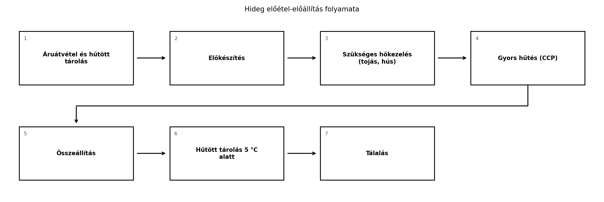

Reggel a hidegkonyhai szakács a reggeli büféhez töltött tojást és Waldorf-salátát készít. Nyitás előtt minden tányérnak hidegnek, frissnek és biztonságosnak kell lennie. Hideg előételnél nincs utólagos hőkezelés: ha a majonézes tojásban a baktériumok elszaporodtak, azt semmilyen sütő nem javítja meg. Ezért a hidegkonyhán a hűtés, a keresztszennyeződés elleni védelem és a pontos tájékoztatás egyforma fontosságú a jó ízzel.

A folyamatábra azt mutatja, hogy a hideg előételnél a hőkezelés csak részfolyamat. A kész étel biztonságát a gyors hűtés és a folyamatos hidegen tartás adja.
Definíció. Hideg előételnek nevezzük azokat az étkezés elején tálalt, jellemzően hidegen kínált készítményeket, amelyeket a vendég kenyérrel, salátalevélen vagy önállóan fogyaszt, és amelyeket a végső összeállítás után nem hőkezelnek.
A legfontosabb szabály:
Szabály. Hideg előételnél minden hőkezelést igénylő alapanyagot – tojást, húst, burgonyát – előbb biztonságosan hőkezelünk, majd gyorsan visszahűtünk. A nyers zöldséget és gyümölcsöt alaposan mossuk. A kész étel hőmérsékletét tálalásig legfeljebb a HACCP-tervben rögzített hideg hőmérsékleten tartsuk (tanulási érték: 5 °C alatt, ellenőrizendő: NÉBIH-útmutató, HACCP-terv).
Higiénia. A hidegkonyhán a puszta kézzel való érintést kerüljük, mert a kész ételt már nem hőkezeljük. A nyers hús, baromfi, tojás és a mosatlan zöldség kórokozókat hordozhat. A kész komponensek számára tiszta, elkülönített eszközöket használunk. A hűtőben a kész hideg előételt lefedve, a nyersanyagok fölött tároljuk, hogy az esetleges lé ne csöppenjen rá.
Kritikus pont. Veszély: a hűtést igénylő hideg előételben – például főtt tojásban, majonézes hússalátában – a baktériumok elszaporodása. Felügyelet: a főtt, meleg komponens maghőmérsékletét és a hűtő hőmérsékletét mérjük. Kritikus határ: a főtt étel hőmérséklete a HACCP-tervben rögzített időn belül (tanulási érték: 2 órán belül, ellenőrizendő) érje el az 5 °C körüli hűtőhőmérsékletet; a gyors visszahűtés általános szabályát az Élelmiszerromlás és a tartósítás fizikai módszerei alfejezet adja, a konkrét idő- és hőmérséklet-lépcsők a hatályos útmutatóból veendők (ellenőrizendő); a hűtőtárolás legfeljebb 5 °C (ellenőrizendő: hatályos útmutató). Helyesbítés: ha a hűtés üteme lemarad, de a határidőn belül vagy, a hűtést azonnal gyorsítani kell (sekély edény, jégfürdő, sokkoló). Ha az étel a határidőn túl volt a veszélyes zónában, vagy ez nem dönthető el, az ételt zárolni és selejtezni kell. Dokumentálás: a hűtési időt, hőmérsékletet és a selejtezést naplózzuk.
Definíció. Összetett salátának nevezzük azt a hideg ételt, amelyben a feldarabolt főtt vagy nyers zöldséget, gyümölcsöt, húst, tojást vagy sajtot öntet köti össze, és amelyet hűtött komponensekből, hűtve állítunk össze; a leveles salátát közvetlenül tálalás előtt öntetezzük, a majonézes salátákat hűtőben érleljük.
Az összetett saláta akkor jó, ha:
A három tanult saláta összehasonlítása:
| Saláta | Fő alkotóelemek | Öntet | Jellemző allergének |
|---|---|---|---|
| Waldorf-saláta | zeller, alma, dióbél | majonézes-tejszínes | tojás, tej, diófélék, zeller, mustár |
| Caesar-saláta | római saláta, pirított kenyérkocka, parmezán | tojásos-szardellás öntet | glutén, tojás, hal, tej, mustár |
| Orosz hússaláta | főtt burgonya, sárgarépa, zöldborsó, alma, savanyú uborka, főtt hús vagy sonka | majonéz | tojás, mustár, zeller, szulfit (ha a húskészítményben van) |
Waldorf-saláta. A zellert és az almát vékony julienne-re vágjuk. A diót szárazon illatosra piríthatjuk, de a hideg változatban nyersen is használhatjuk. Az öntet majonézből, tejszínből, citromléből, sóból, fehér borsból készül. A saláta készítésekor az alma és a zeller legyen ropogós, az öntet éppen csak fogja össze az alapanyagokat. A Waldorf-saláta a klasszikus hideg előétel: egyszerre édes, savanykás és diós.
Caesar-saláta. A római salátaleveleket egészben vagy nagyobb darabokban hagyjuk. A kenyérkockát vajon vagy olívaolajon aranysárgára pirítjuk. A parmezánt pehelyben adjuk hozzá. Az öntetben hagyományosan szardella, tojássárgája, fokhagyma, mustár, citromlé, olívaolaj van. A Caesar-öntetben a nyers tojássárgája Salmonella kockázatot jelent, ezért a Caesar-öntet nyers tojássárgájával csak pasztőrözött tojástermékből készülhet; nem pasztőrözött nyers tojással nem készítjük. A kész öntetet hűtve tároljuk, és sérülékeny csoportnak nem adjuk (ellenőrizendő: NÉBIH-útmutató / HACCP-terv).
Orosz hússaláta. A főtt burgonyát, sárgarépát, zöldborsót, almát és a főtt húst apró kockára vágjuk. A hozzávalókat majonézzel, mustárral, citromlével keverjük össze. A kész salátát 1–2 órára hűtőbe tesszük, hogy az ízek összeérjenek. Fontos, hogy a főtt burgonya és hús hűtése gyors legyen, mielőtt a majonézes salátába kerül.
Allergén. Az összetett saláták közül a Caesar-saláta halat (szardella), tojást, glutént, tejet és mustárt tartalmazhat; a Waldorf-saláta zellert, dióféléket, tojást és tejet; az orosz hússaláta mustárt, tojást, zellert, és füstölt húskészítménynél szulfitot. A vendéget pontosan tájékoztatni kell; allergiás vendég esetén az öntetet és az egyes összetevőket külön, elkülönített eszközökkel kell kezelni.
Töltött zöldségek. A hideg előételnek választott zöldség legyen friss, ropogós, szabályos formájú. Jellemző alapanyagok: paradicsom, uborka, hónapos retek, kisebb kaliforniai paprika. A töltelék lehet fűszeres sajtkrém, túrókrém, majonézes hússaláta vagy tojáskrém. A zöldség közepét kiskanállal vagy párizsi kiszúróval vájjuk ki, a felesleges levet lecsepegtetjük. A tölteléket habzsákból vagy kanállal formázzuk a zöldségbe. A töltött zöldséget tálalásig hűtőben lefedve tároljuk, mert a töltelék általában tejterméket és tojást tartalmaz.
Gyümölcsös hideg előétel. A gyümölcsök közül a dinnye, alma, körte, szőlő és citrusfélék alkalmasak hideg előételnek. A klasszikus példa a dinnye sonkával. Ehhez a sárgadinnyét hosszában félbevágjuk, magját kivesszük, majd a héjától elválasztva ujjnyi szeleteket vágunk. A szeletet jéghideg, vékonyra szelt, nyers, érlelt sonkával tekerjük. A tálalásnál frissen őrölt borsot és kevés balzsamecetet vagy balzsamkrémet adhatunk hozzá. A dinnye édes, hideg, puha; a sonka sós, száraz, hússzerű – a kettő együtt adja az előétel harmóniáját.
Higiénia. A nyers gyümölcsöt felhasználás előtt folyó víz alatt meg kell mosni, mert a héján lévő szennyeződés kés közvetítésével a húsra kerülhet. A dinnyét hámozás előtt mossuk; hámozás után a kész gyümölcshúst tiszta, hűtött edényben tároljuk.
Tojás előkészítése. A hideg tojásétel alapja a keményre főtt tojás. A tojást enyhén sós, forrásban lévő vízben annyi ideig főzzük, hogy a sárgája teljesen megszilárduljon (tanulási érték: 8–10 perc forrástól; ellenőrizendő: tojásméret és tűzhely). A főtt tojást azonnal jéghideg vízbe tesszük. Ezzel a főzést leállítjuk, megakadályozzuk a sárgája elszürkülését, és a héj könnyebben leválik. A lehűtött tojást hámozzuk, hosszában kettévágjuk.
Töltött tojás. A fél tojások sárgáját kiemeljük, szitán áttörjük. A sárgájához majonézt, mustárt, citromlevet, sót, fehér borsot keverünk. A tölteléket habzsákba tesszük, és a fél tojásfehérjékbe formázzuk. A tetejét pirospaprikával, aprított snidlinggel vagy finomra vágott petrezselyemmel díszítjük. A töltött tojást tálalásig hűtőben, lefedve, a nyersanyagoktól elkülönítve tároljuk.
A képsor a technológiai lap lépéseit követi: (1) főzés, jéghideg víz, hámozás; (2) félbevágás hosszában; (3) a sárgája kiemelése és áttörése; (4) töltés csillagcsöves habzsákkal; (5) díszítés; (6) a tálkép.
Figyeld a 4. és a 6. képet: a fél fehérjék a töltés alatt is hűtött tálcán állnak, a kész tálca pedig azonnal, lefedve kerül a hűtőbe, mert a hidegkonyhai terméket utólag már semmi sem hőkezeli. A rozetták egyforma magassága a minőségi követelmény része. A HTML-kiadásban a képsor lépésenként lejátszható.
Kocsonyázott tojás. A kész töltött tojást hűtött aszpikzselével vonhatjuk be. Ehhez az aszpikot jégen kevergetve sűrűsödésig (a dermedés kezdetéig) hűtjük, és a még folyékony, szirupos aszpikkal a tojás felületét több vékony rétegben bevonjuk, rétegenként hűtve; vagy a tojást formába tesszük, és hűtött, de még folyékony aszpikkal leöntjük. A már dermedt aszpik nem kenhető, a meleg pedig lefolyik. A kocsonyázott tojás csak akkor szép, ha az aszpik tiszta, illatos és megfelelően dermed. A kocsonyázás további ismereteket igényel; a kocsonyák és aszpikok témája a Kocsonyák, aszpik, hideg hal- és húsételek, felvágottak alfejezetben kerül elő.
Adagszám: 10 adag
Adagsúly: 2 db fél tojás, kb. 65 g kész tömeg
(ellenőrizendő: tojás átlagtömege)
| Nyersanyag | Mennyiség 10 adagra | Megjegyzés |
|---|---|---|
| Tojás | 12 db | 10 db a tálaláshoz + 2 db ráhagyás (hámozási sérülés, a töltelékhez plusz sárgája); M/L méretű, friss, ép héjú; főtt formában felhasználva (allergén: tojás) |
| Majonéz | 150 g | Pasztőrözött tojásból készült (allergén: tojás, mustár) |
| Mustár | 20 g | Krémes, csípős változat (allergén: mustár) |
| Citromlé | 10 ml | Frissen facsart, szűrt |
| Só | 3 g | Jódozott étkezési só |
| Őrölt fehér bors | 2 g | Frissen őrölt |
| Pirospaprika | 1 g | Tálaláshoz, díszítéshez |
| Snidling | 5 g | Apróra vágva |
Allergének: tojás, mustár; a majonéz összetevőitől
függően nyomokban tej, szójabab vagy szulfit lehet (ellenőrizendő: a
felhasznált termék adatlapja).
Eszközök és gépek: főzőedény, jéghideg vizes tál,
tojáshámozó, kis kés, szita, keverőtál, habzsák, csillagcső,
vágódeszka.
Előkészítés
Elkészítés
Kritikus pontok. A tojások főzésénél el kell érni a sárgája teljes megdermedését; a maghőmérséklet-ellenőrzés tanulási értéke legalább 75 °C (ellenőrizendő: HACCP-terv). A főtt tojást a forró állapotból gyorsan, a HACCP-terv szerinti időn belül 5 °C alá kell hűteni (ellenőrizendő: konkrét idő). A töltelék készítésekor a majonézt hűtve kell tartani, a kész tojást a tálalásig 5 °C alatt, lefedve tárolni.
Készentartás és tálalás. A töltött tojást legfeljebb a HACCP-tervben rögzített ideig, hidegen tároljuk. Tálaláskor salátalevélre ültetjük, és frissen díszítjük. Adagonként 2 db fél tojást adunk.
Minőségi követelmények. A tojásfehérje ép, nem repedezett; a töltelék sima, krémes, könnyű; a sárgája nem szürkül el; az íz enyhén savanykás, mustáros, nem túl sós. A tojás hőmérséklete hideg, 5 °C körüli (ellenőrizendő).
Tipikus hibák és javításuk. Ha a tojás túlfőtt, a sárgája körül zöldesszürke gyűrű képződik: a tojást azonnal jéghideg vízbe kell tenni, és a főzési időt csökkenteni. Ha a töltelék folyós, kevesebb folyadékot vagy több áttört sárgáját adunk hozzá. Ha a majonéz szétesik, a tölteléktől külön készítsünk új majonézt, és fokozatosan keverjük a sárgájához.
Változatok. Tárkonyos, metélőhagymás, Worcester-szószos, avokádós, kapribogyós változat készíthető. A kocsonyázott változatnál a tojást aszpikkal vonjuk be.
Számítás. A technológiai lap 10 adagra szól. Mennyi tojás és majonéz kell 45 adag töltött tojáshoz?
Adott: 10 adagra 12 db tojás és 0,150 kg majonéz; céladagszám 45
adag.
Keresett: a szükséges mennyiségek.
Képlet: szorzószám
.
Behelyettesítés:
Eredmény: 54 db tojás és 675 g majonéz. Ellenőrzés: 10 adag 12 db → 1 adag 1,2 db; 45 adag 54 db, ez helyes. Magyarázat: 45 adaghoz 45 tojás kerül a tányérra, a 9 db többlet a 20 %-os ráhagyás (hámozási sérülés, töltelék). A tálaláshoz a díszítőanyagokat is a szorzószámmal növeljük.
Cél: a hidegkonyhai hűtési és adagolási szabályok
betartásával töltött tojást készíteni.
Eszközök és anyagok: tojás 6 db, majonéz 75 g, mustár
10 g, citromlé 5 ml, só 1,5 g, fehér bors 1 g, pirospaprika 0,5 g,
snidling 2,5 g; főzőedény, jéghideg vizes tál, kés, szita, tál, habzsák;
digitális maghőmérő, hűtőhőmérő, fogyasztói tálca.
Biztonsági korlát. A tojásfőzést forró folyadék
közelében, edényfogó kesztyűvel végezd; a habzsákot tiszta, száraz
kézzel töltsd. Otthon a gyakorlatot felügyelettel, tankonyhai vagy
oktatói körülmények között végezd.
Higiéniai előkészület: kézmosás a személyi higiéniai
szabályok szerint; tiszta kötény, hajháló; a munkafelületet és a
vágódeszkát fertőtlenített, elkülönített eszközzel készítsd elő.
Lépések:
Ellenőrzési pontok: a főzővíz hőmérséklete; a
tojásmaghőmérséklet főzés után; a hűtőhőmérséklet; a kész adag tömege (5
adag kb. 325 g); az allergéntájékoztatás megléte.
Dokumentálás: a HACCP-űrlapon rögzítsd a tojásfőzés
időpontját, a hűtés befejezését, a hűtőhőmérsékletet és a tálalás
időpontját.
A hideg előétel minőségi ellenőrzésénél a következőket vizsgáljuk:
1. Hiba: A főtt tojást forrón, jeges hűtés nélkül
hagyják kihűlni, majd a töltelékbe teszik.
Ok: a szakács időt vagy hideg vizet takarít meg.
Helyes gyakorlat: a főtt tojást azonnal jéghideg vízbe
kell tenni, mert a lassú hűtés a baktériumok szaporodásához és a sárgája
elszürküléséhez vezet.
2. Hiba: A majonézes kész salátát a konyhapulton
hagyják a mise en place alatt.
Ok: a szakács azt gondolja, hogy a hideg tálalásig
ráér.
Helyes gyakorlat: a majonézes, tojásos, tejtermékes
készítményeket összeállítás után azonnal hűtőbe kell tenni, és csak kis
adagokban, időjelöléssel szabad kihelyezni.
3. Hiba: A Caesar-saláta öntetét hagyományos módon,
nyers tojássárgájával készítik, majd több órán át a hűtő nélküli pulton
tartják.
Ok: a recept szerinti nyers tojás használata, és a
hűtési szabály figyelmen kívül hagyása.
Helyes gyakorlat: csak pasztőrözött tojásterméket
használni, és a kész öntetet azonnal hűteni; nem pasztőrözött nyers
tojásos öntetet nem készítünk.
4. Hiba: A zöldség- és gyümölcstisztítást ugyanazon
a vágódeszkán végzik, mint a nyers csirkemell előkészítését.
Ok: a keresztszennyeződés veszélyét nem ismerik
fel.
Helyes gyakorlat: a nyers húshoz és a kész hideg
előételhez külön deszkát, kést és színkódolt eszközöket kell
használni.
Egy büfében a szakács 40 db töltött tojást készített a reggeli nyitáshoz. A tálcát a pult szélére tette, közel a kávégép gőzéhez. A tojások hőmérséklete óránként mérve folyamatosan emelkedett: 9 órakor 6 °C, 10 órakor 14 °C, 11 órára 23 °C volt. Két vendég gyomorpanaszról számolt be. A hibát az esetvizsgálat során az okozta, hogy a kész hideg előétel a veszélyes hőmérsékleti zónában állt. A helyes gyakorlat az lett volna, hogy a tojást kis adagokban, hűtött tálcán, jégágyon vagy hűtött vitrinben tartják, a többit hűtőben tárolják, és a kihelyezés időpontját jelölik. A tanulság: hideg előételnél a hőmérsékleti lánc megszakadása nem javítható utólagos hőkezeléssel.
1. feladat (A) Fogalmazd meg röviden a hideg előétel fogalmát, és mondd meg, mi a legfontosabb higiéniai szabály.
2. feladat (A) Hány db tojás szükséges 25 adag töltött tojáshoz, ha 5 adaghoz 6 db tojást használunk?
3. feladat (B) Állítsd a következő műveleteket a
helyes technológiai sorrendbe:
a) a tojásfőzés, b) a tojások hűtése, c) a tojások felezése, d) a
sárgája áttörése, e) a töltelék ízesítése, f) a habzsákos formázás, g) a
hűtőbe helyezés.
4. feladat (B) A Waldorf-saláta 10 adagjához 300 g majonéz kell. Mennyi majonéz kell 35 adaghoz? Add meg kg-ban is.
5. feladat (C) Egy vendég tojásallergiás. A töltött tojás helyett milyen hús- és tejmentes hideg előételt tudnál ajánlani? Milyen keresztszennyeződési veszélyre kell figyelni?
6. feladat (D) A gyakorlati útmutató szerint készülő 5 adag töltött tojásból a szakács az egyik tálat a meleg pulton hagyta 2 órán át. Mit kell tennie a HACCP-szabály szerint? Milyen méréssel tudná ellenőrizni a hibát?
Önellenőrzés – válaszok:
1. feladat (A)
A hideg előétel olyan, jellemzően hidegen tálalt készítmény, amelyet a
végső összeállítás után már nem hőkezelnek. Legfontosabb szabály: minden
hőkezelt komponenst gyorsan lehűtünk, a nyers zöldséget/gyümölcsöt
alaposan mossuk, a kész ételt 5 °C alatt, a nyersanyagoktól elkülönítve
tároljuk (ellenőrizendő: HACCP-terv).
2. feladat (A)
5 adaghoz 6 db → 1 adaghoz
db. 25 adaghoz
db tojás. Ellenőrzés:
;
25 adag ötszöröse 5 adagnak,
.
Válasz: 30 db.
3. feladat (B)
Helyes sorrend: a) tojásfőzés → b) hűtés → c) felezés → d) sárgája
áttörése → e) töltelék ízesítése → f) formázás → g) hűtőbe helyezés.
4. feladat (B)
Szorzószám
.
Majonéz:
.
Válasz: 1050 g, azaz 1,05 kg majonéz.
5. feladat (C)
Tojásallergiás vendégnek ajánlható például vinaigrette-es (tojás- és
tejmentes) zöldségsaláta, töltött paradicsom zöldséges-gabonás (pl.
kuszkuszos) töltelékkel vagy gyümölcskoktél; az öntet és a töltelék
összetevőit (pl. mustár) ellenőrizni kell, és a vendéget tájékoztatni. A
dinnye sonkával nem felel meg, mert húst tartalmaz. A
keresztszennyeződés veszélye: a tojásos majonézes eszközök, vágódeszkák,
habzsák ne érintkezzenek az allergiás vendég ételével; a kész ételt
tojásmentes, tiszta, lefedett edényben tároljuk.
6. feladat (D)
A 2 órán át a meleg pulton hagyott töltött tojás a veszélyes
hőmérsékleti zónában lehetett. A HACCP-szabály szerint a kész ételt le
kell selejtezni, mert a hűtési lánc megszakadt, és a hőmérséklet
emelkedésével a baktériumok szaporodhattak. A hibát maghőmérővel
lehetett volna észlelni: a tojás hőmérsékletét a pulton töltött idő után
mérni kell. Ha a mért hőmérséklet meghaladta a HACCP-tervben rögzített
hideg tárolási határt, a selejtezés indokolt. Az eseményt dokumentálni
kell.
A hideg előétel olyan készítmény, amelyet az összeállítás után már nem hőkezelnek. Ezért a hidegkonyha legfontosabb szabálya a hűtési lánc fenntartása: a főtt tojást, húst, burgonyát gyorsan lehűtjük, a kész ételt 5 °C alatt, lefedve, a nyersanyagoktól elkülönítve tároljuk (ellenőrizendő: HACCP-terv). Az összetett saláták – Waldorf, Caesar, orosz hússaláta – akkor biztonságosak, ha az öntetet hűtve készítjük, és a nyers tojásos öntetet csak pasztőrözött tojástermékből készítjük. A töltött zöldségek és gyümölcsös előételek, mint a dinnye sonkával, friss, hűtött alapanyagokból készülnek. A töltött tojás alapja a keményre főtt, azonnal jeges vízben lehűtött tojás, sárgája majonézes-mustáros krémből áll. Az allergének – tojás, mustár, tej, zeller, hal, glutén, diófélék, szulfit – pontos tájékoztatása kötelező. A nyers és a kész készítmények közötti keresztszennyeződés megelőzése a hidegkonyha minden dolgozójának feladata. Továbbvitt eredmény: ez a higiéniai rendszer – gyors hűtés, hűtőlánc, keresztszennyeződés-mentesség, nincs utólagos hőkezelés – a Pástétomok, terrine-ek és galantinok alfejezetben is alapkövetelmény, ahol a hideg húsos készítményeket azonos hűtési és tájékoztatási szabályok szerint készítjük.